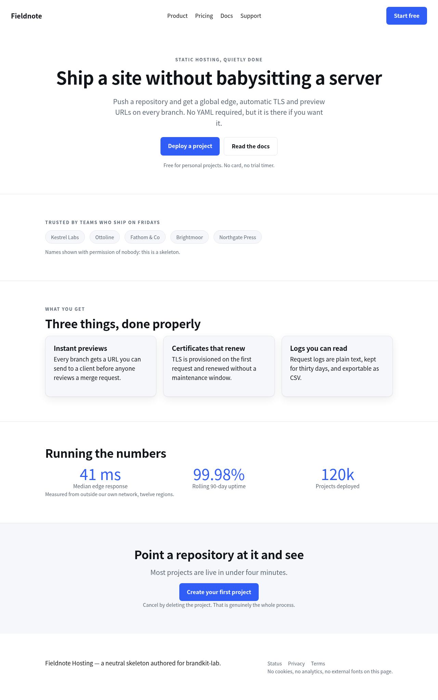
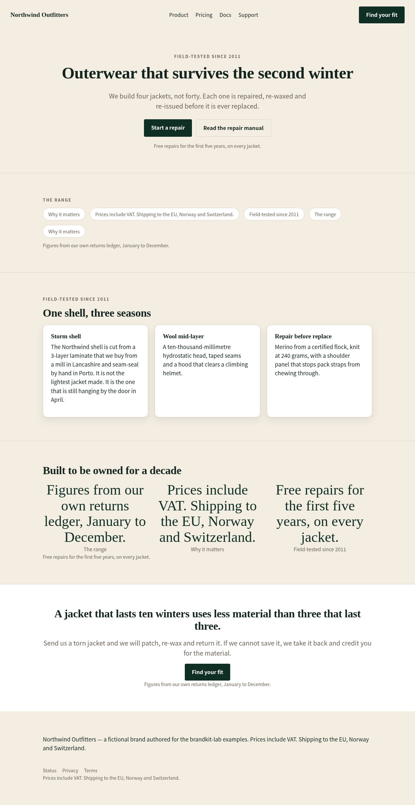
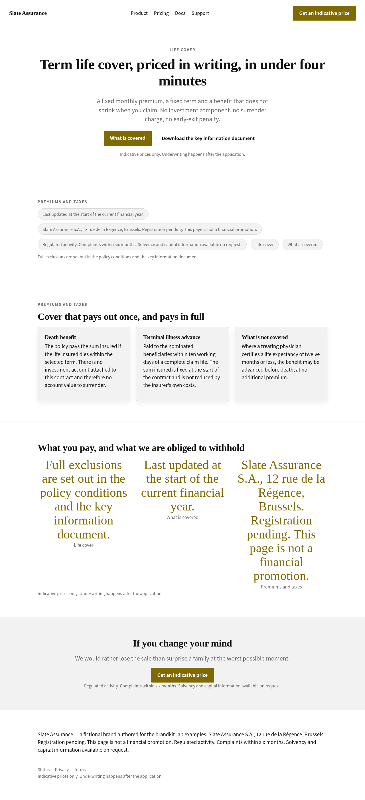
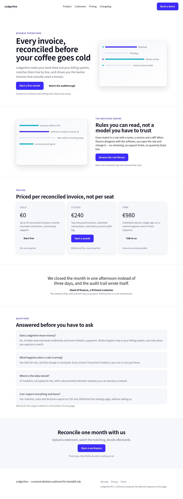
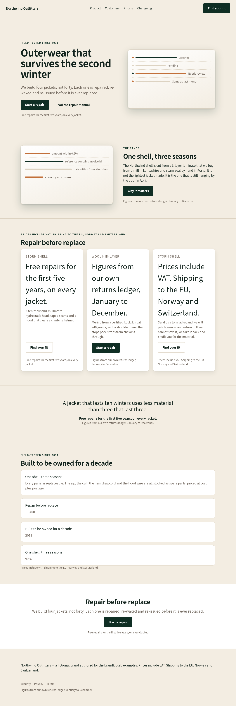
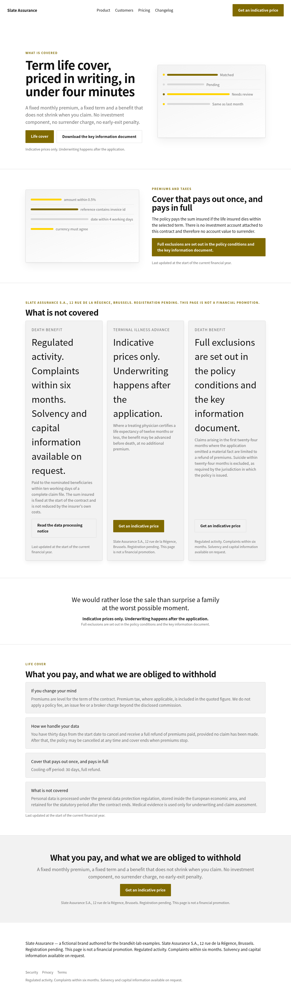
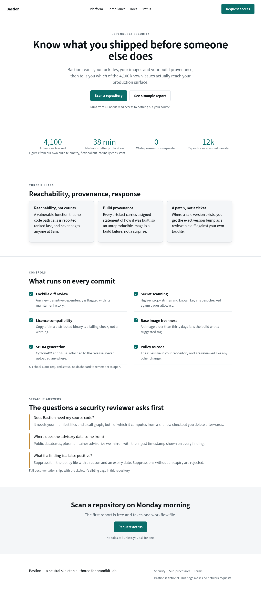
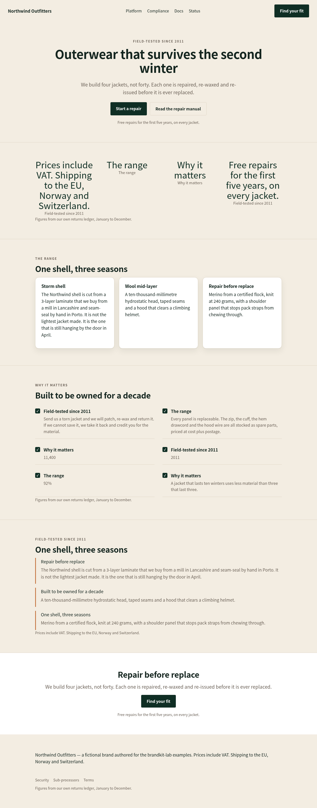
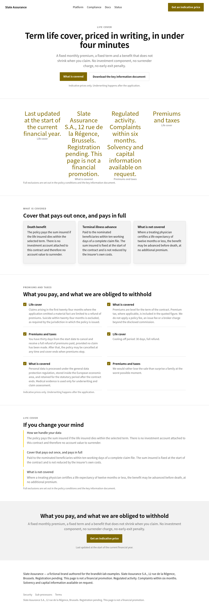

brandkit-lab · dependency-free Python · generated gallery
One measurable pipeline: measure the facts a brand source actually declares, draft only the words, assemble a single kit that is the sole writer of every token, and bind it onto neutral landing skeletons while proving the band list and repeat counts are unchanged.
Written by scripts/eval_report.py into docs/eval.json.
The same script exits non-zero if any of these thresholds regress, so this table is a gate,
not a souvenir.
| source | skeleton | slots | worst contrast | bands | repeats | guardrails | tree | determin. | kit hash |
|---|---|---|---|---|---|---|---|---|---|
| northwind-outfitters | 01-host-landing | 37/44 | 5.19:1 | 7 | 18 | 0 | yes | yes | a4d53894783bdbe3 |
| northwind-outfitters | 02-saas-marketing | 50/57 | 5.19:1 | 8 | 14 | 0 | yes | yes | 6c577c388b752d32 |
| northwind-outfitters | 03-product-security | 55/62 | 5.19:1 | 8 | 23 | 0 | yes | yes | 988d3f87c17da547 |
| northwind-outfitters | 04-insurance-longform | 44/51 | 5.19:1 | 7 | 19 | 0 | yes | yes | 76285c1b141fde68 |
| pulse-analytics | 01-host-landing | 37/44 | 5.75:1 | 7 | 18 | 0 | yes | yes | da539de7a31355a2 |
| pulse-analytics | 02-saas-marketing | 50/57 | 5.75:1 | 8 | 14 | 0 | yes | yes | df9908cd1463a443 |
| pulse-analytics | 03-product-security | 55/62 | 5.75:1 | 8 | 23 | 0 | yes | yes | 95075f01f07db3b8 |
| pulse-analytics | 04-insurance-longform | 44/51 | 5.75:1 | 7 | 19 | 0 | yes | yes | ed06b97b255383f6 |
| slate-assurance | 01-host-landing | 37/44 | 4.71:1 | 7 | 18 | 2 | yes | yes | a2b54807daec725e |
| slate-assurance | 02-saas-marketing | 50/57 | 4.71:1 | 8 | 14 | 2 | yes | yes | 1e6538956255b65c |
| slate-assurance | 03-product-security | 55/62 | 4.71:1 | 8 | 23 | 2 | yes | yes | 52ab138e6865a20c |
| slate-assurance | 04-insurance-longform | 44/51 | 4.71:1 | 7 | 19 | 2 | yes | yes | 2eb3778a778ed8df |
Token fingerprints — one kit per brand, identical on
every skeleton it is bound to:
northwind-outfitters 22154ef0e7146259 · pulse-analytics d24e19983a058d99 · slate-assurance 8813880cf89bb8b1.
Left: the skeleton with its own neutral theme. Then the same untouched markup
carrying each brand's kit. The band list, the number of bands and every repeat count are
identical in all three; only the token block and the copy slots differ. Screenshots are
full-page captures of the local file:// pages — no CDN, no webfonts, so what you
see is what CI renders.









Colour tokens straight out of each kit's kit.json, with provenance:
measured means the source page declared it, derived means the kit builder had
to compute it (a sibling surface, a raised elevation, or the contrast repair above).
Slate Assurance is greyscale with a single accent colour, declared as a
text colour on white. The measured brand colour is
#ffd400, which sits at 1.28:1
on the page surface. A pipeline that copies the brand colour into the link colour ships
unreadable text; this one keeps the measured colour where colour is decoration and derives a
legible primary for anything that carries words.
#ffd400 → #806a00 (darken 0.50 towards black,
1.28:1 → 4.71:1 on the worst surface).
The measured colour survives as --accent, which is used for
surfaces, rules and underlines but never for text.
Every kit in this gallery is gated on that rule: if an enforced pair
cannot reach 4.5:1, assemble_kit() raises instead of writing a kit.
Standard library only. The three example brand sources are fictional pages authored for this repository, so the whole thing runs offline and license-clean.
# the gate: 3 sources x 4 skeletons, thresholds enforced make eval # writes docs/eval.json, fails on regression # the gallery you are reading (needs a headless Chrome) make gallery # restyles pages, screenshots them, rebuilds this file # one brand, by hand make kit SOURCE=slate-assurance SKELETON=02-saas-marketing open out/restyled/slate-assurance--02-saas-marketing.html # what is in the registry make api